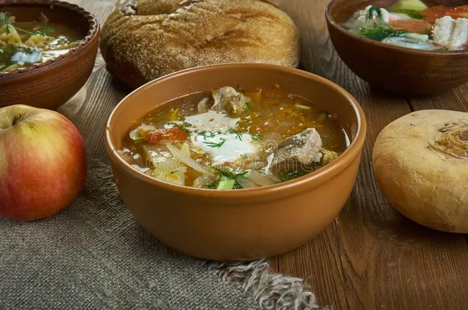
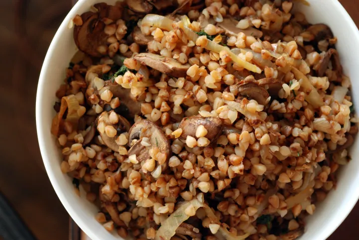
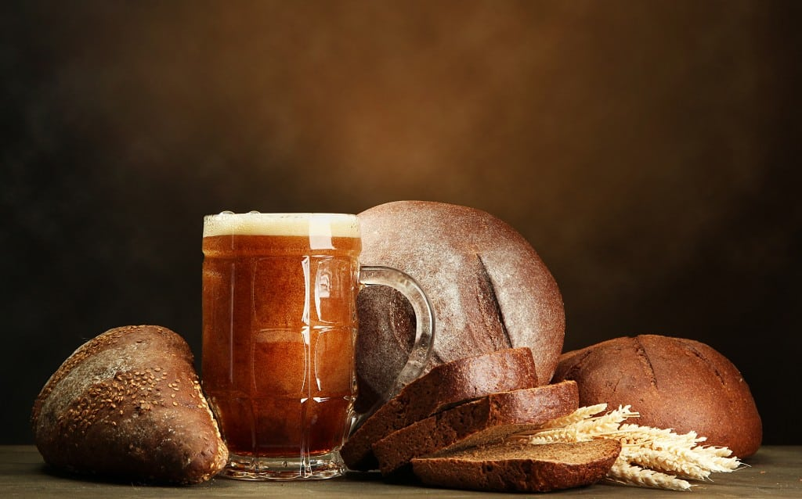
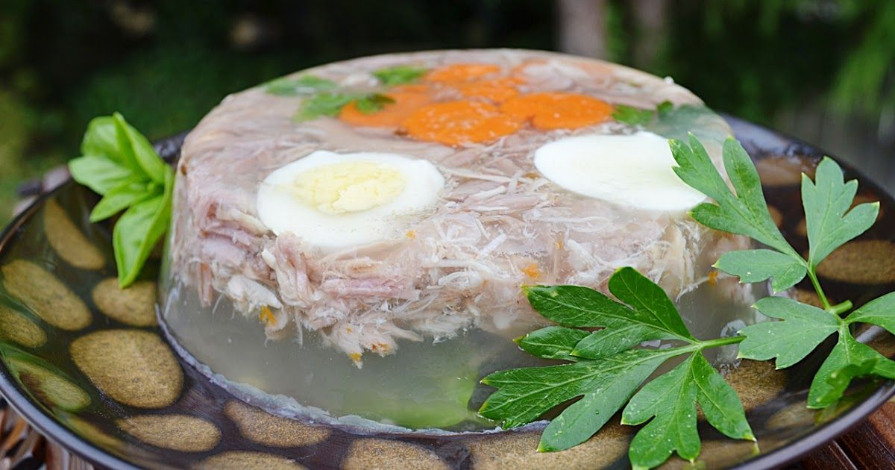

Explore History
Russian cuisine has been shaped by a variety of historical influences, including the nomadic tribes of the Eurasian steppes, the Byzantine Empire, and the culinary traditions of neighboring countries such as Poland, Ukraine, and Central Asia. The harsh climate and long winters also played a significant role in shaping the hearty and comforting nature of Russian dishes.
Blini predate Christianity in the East Slavic world and are tied to pagan solar rituals. During Maslenitsa, the week-long festival before Orthodox Lent, they symbolized the sun and the end of winter. When Christianity spread, the tradition was absorbed into the Orthodox calendar rather than replaced.
Blini represent continuity between pre-Christian Slavic belief systems and Orthodox Russia, preserving one of the clearest examples of ritual food surviving religious transition

Shchi, cabbage soup, has been documented in Russian sources for nearly a thousand years and was consumed across all social classes, from peasants to nobility.
The proverb “Щи да каша — пища наша” (“Cabbage soup and porridge are our food”) reflects its status as a foundational daily food rather than a luxury.
Its significance lies in social universality, remaining a constant across medieval, imperial, and Soviet periods.

Kasha, especially buckwheat porridge, sustained rural Russia for centuries and reflects the central role of grain agriculture in Russian history.
It was a daily staple and also used in rituals such as weddings, funerals, and religious fasts, as well as military provisioning.
Its historical importance is tied to survival in a climate shaped by famine risk and long winters, making it a core element of agrarian Russian life.

Borscht originated in broader Eastern Slavic culinary traditions but became firmly embedded in Russian cuisine through centuries of shared cultural development.
It reflects agricultural cycles, seasonal preservation, and communal dining practices across rural and urban settings.
Its significance also lies in its role as a shared cultural marker across Eastern Slavic societies.

Pelmeni originated in the Ural and Siberian regions and reflect Russia’s expansion eastward and adaptation to extreme environments.
They were designed for storage in freezing conditions, making them practical for settlers, hunters, and military movement across Siberia.
Their importance lies in representing frontier life and territorial expansion into cold, sparsely populated regions.

Created in 19th-century Moscow, Olivier salad transitioned from an elite restaurant dish to a defining feature of Soviet domestic cuisine.
Its evolution reflects broader political and social transformation, particularly the adaptation of aristocratic traditions into mass Soviet culture.
It remains strongly associated with New Year’s celebrations, the most significant secular holiday in modern Russia.

Named after the Stroganov family, this dish reflects 19th-century Russian aristocratic cuisine influenced by French culinary techniques.
It represents the cultural orientation of imperial Russia toward Western Europe prior to the 20th-century political shift.
Its later global spread also made it one of the most internationally recognizable Russian-origin dishes.

Pirozhki are stuffed buns that developed as practical food for workers, travelers, and urban populations.
They became especially widespread during industrialization and the Soviet period, where they functioned as accessible street and home food across classes.
Their significance lies in everyday food culture rather than elite or ritual contexts.

Kvass is a fermented rye beverage with medieval origins, widely consumed due to its low alcohol content and role as a safer alternative to untreated water.
It remained common through imperial and Soviet periods and was notably sold from street barrels in urban centers.
Its importance lies in continuity and everyday utility across centuries of Russian life.

Kholodets is a meat aspic derived from medieval preservation techniques using natural gelatin from slow-cooked animal products.
It reflects pre-refrigeration methods of food storage and was typically prepared for holidays and ceremonial gatherings.
Its cultural role is primarily traditional and technical, preserving older culinary methods rather than shaping national identity.
